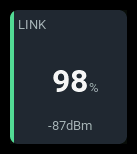
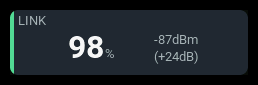
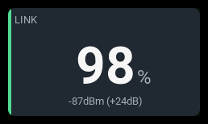

link-status
| 1x2 | 2x1 | 2x2 |
|---|---|---|
 |
 |
 |
Shows measured link quality or RSSI, link freshness, and optional RF details. Link quality is never inferred from RSSI. The panel does not calculate an aggregate health percentage or issue voice/haptic alerts.
Settings
| Key | Default | Meaning |
|---|---|---|
qualitySource |
empty | Exact link-quality source name, usually receiver-side RQly for ELRS. |
rssiSource |
RSSI |
Exact signal-strength source name; ELRS receiver examples use 1RSS. |
reading |
auto |
quality, rssi, or auto, which prefers available quality and falls back to RSSI. |
protocol |
generic |
generic preserves source units and raw RFMD; elrs4 enables ELRS 4.x rate and nominal sensitivity mapping. |
modeSource |
empty | Optional RFMD source. Required for automatic ELRS margin. |
snrSource |
empty | Optional signal-to-noise source, usually RSNR. |
powerSource |
empty | Optional transmit-power source, usually TPWR. |
qualityWarning / qualityCritical |
none | Independent low-LQ thresholds, in percent from 0 to 100. Require qualitySource. |
marginWarning / marginCritical |
none | Low RSSI-margin thresholds, in dB. Require elrs4, RSSI, and mode sources. |
rssiWarning / rssiCritical |
none | Independent low-RSSI thresholds in the RSSI source's numerical units. |
barMin / barMax |
0 / 100 |
Primary-reading values corresponding to empty/full bar. |
visual |
bar |
bar or none. |
extrema |
none |
none, EdgeTX minimum source, or flight-session minimum flight. |
extremaSource |
empty | Explicit minimum source; otherwise source mode uses the leading source's - suffix. |
label |
LINK |
Panel heading. |
accent |
green |
Normal accent: green, cyan, amber, or orange. |
Source names are case-sensitive. Unknown settings are rejected at load. Critical thresholds must be less than or equal to their warning thresholds. No alarm thresholds are supplied by default.
Behavior
Choose link quality or RSSI as the main reading; reading: auto prefers
available quality. Use receiver-side sources such as RQly, 1RSS, and
RSNR. Link quality shows packet reception; RSSI shows signal strength,
with less-negative dBm values indicating a stronger signal.
For ELRS 4.x, set protocol: elrs4 and configure RSSI and mode sources to
show the RF rate and estimated signal margin. Margin is headroom above
nominal receiver sensitivity, not a guaranteed failsafe boundary.
Dual-band modes and unavailable or stale inputs show no margin. Use
generic for other protocols, including ELRS 3.x.
Configure quality, RSSI, or margin thresholds as needed; none are set by default. The most severe live alarm wins. Optional SNR and power readings provide context without triggering alarms.
States
The most severe configured live threshold condition wins. Comparisons include the boundary: a value equal to warning or critical triggers that state. Equal-severity conditions prefer RSSI, then LQ, then margin. Link-down takes precedence over threshold alarms.
| Condition | Presentation |
|---|---|
| Live readings, no crossed thresholds | Measured value, normal accent. |
| Low LQ, RSSI or margin | WARN/CRIT, state color, explicit cause where supporting text fits. |
| Link down after receiving data | NO LINK headline without a unit, critical state, empty bar. Supporting stale readings carry *. |
| Stale primary source | Last reading retained, STALE; an independent live critical/warning condition can take precedence. |
| Source not recognized | N/A reading and badge. |
| Source waiting for data | -- reading and N/A badge. |
| Valid zero while live | Measured zero, not an unavailable sentinel. |
Examples
ELRS quality with automatic margin and optional details:
- id: receiver-link
type: link-status
col: 0
row: 0
colSpan: 2
rowSpan: 3
config:
protocol: elrs4
reading: quality
qualitySource: RQly
rssiSource: 1RSS
modeSource: RFMD
snrSource: RSNR
powerSource: TPWR
Compact LQ with RSSI/margin stacked on the right and no bottom bar:
- id: compact-link
type: link-status
col: 0
row: 0
colSpan: 2
rowSpan: 1
config:
protocol: elrs4
reading: quality
qualitySource: RQly
rssiSource: 1RSS
modeSource: RFMD
visual: none
Generic RSSI with a source-unit bar and EdgeTX minimum:
- id: signal
type: link-status
col: 0
row: 0
colSpan: 2
rowSpan: 2
config:
reading: rssi
rssiSource: RSSI
barMin: 0
barMax: 100
extrema: source
Select alarm thresholds for the actual receiver, protocol, rate and operating conditions. See ELRS signal health, the RFMD enumeration and nominal sensitivity tables.